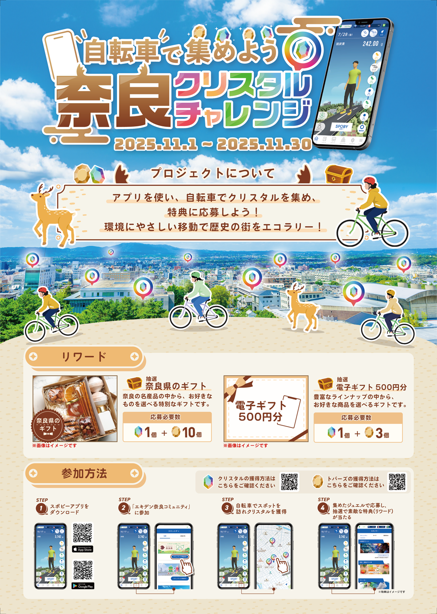

奈良県×SPOBY 自転車で集めよう！奈良クリスタルチャレンジ
制作背景・意図
- 【概要】
-
- 役割 : 奈良県でSPOBYアプリを活用した「クリスタルチャレンジイベント」実施にあたり、市民に向けての取り組み内容をわかりやすく伝え、イベント参加を促進するためのイベント導入用ポスター
- 掲載場所 : 奈良市役所
- 対象ユーザー : 奈良市民
- アプリ（SPOBY）について :
「SPOBY」は人の活動による脱炭素・健康増進を実現するアプリです。ユーザーはアプリを利用して活動を行うことでポイントを獲得でき、貯まったポイントはアプリ内に掲載されている様々なリワードと頑張ったご褒美として交換・獲得することができます。
- 【制作目的】
-
- 奈良市民にSPOBYアプリをダウンロードしてもらい、環境にやさしい自転車移動を活用しながらイベントに参加してもらい、楽しみながら継続利用してもらうことを目的に制作いたしました。また、イベントを通して奈良の魅力や商品などPRとしても伝えることで、「環境イベント＝堅い・大変」という印象を和らげることも狙いとしています。
- 【背景/課題】
-
- 日常生活の中で脱炭素行動の重要性は認識されているものの、「具体的に何をすれば良いのか分からない」「行動に移すきっかけがない」といった理由から、実際の行動につながりにくい状況がありました。そのため、市民が楽しみながら無理なく行動変化を始められるような、分かりやすい施策が求められていました。
- 【制作時に重視したポイント】
-
- 今回のイベントでは掲載する情報量が多いことを踏まえ、表紙では「何のイベントか」「どのように始められるか」「参加することで得られるメリット」が一目で把握できるよう、イベントの主題となる情報に絞って構成しました。 一方で、イベント内での詳細なルールや注意事項については、行政との施策であることを踏まえ、安全面への配慮が特に重要であったため、裏紙に集約して丁寧に記載しています。またビジュアル面では、奈良の街並みや色味、奈良らしいモチーフを取り入れることで、地域性とイベントの世界観が直感的に伝わるようにし、環境施策でありながらも、楽しみながら参加できる印象を持ってもらえることを意識しました。